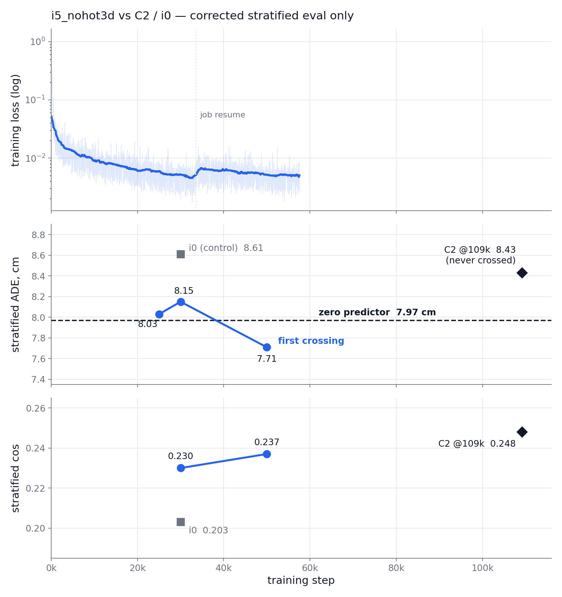

Overview
[TL;DR] i5 beat the zero predictor; 320M and Sharpa-10 % land by 09:00.
- Done: i5 > zero, 4/6 datasets
- Update: 320M config, H100 open
- Tonight: p1–p5 + evals, 09:00



ieval jobs 144911/146286 · plan: ~/3d-wam/P-SERIES.md · config: code/configs/p4_320m.yaml · deck #8 = the full evaluation story
Results
- Current best: i5 (hot3d excluded)
- crossed zero at 50k
- 110k lands ~06:00 KST
- Cross-embodiment status
- Rollout gallery: C2 vs i5


| model | cos | hand | ADE | zero |
|---|---|---|---|---|
| i5 @50k | 0.237 | 0.324 | 7.71 | 7.97 |
| C2 @109k | 0.248 | 0.337 | 8.43 | 7.97 |
| i9 @30k | 0.213 | 0.291 | 8.25 | 7.97 |
| dataset | i5 ADE | zero |
|---|---|---|
| dexycb | 9.44 | 10.00 |
| grab | 16.13 | 17.75 |
| hot3d — never trained on | 6.68 | 6.89 |
| oakink2 | 2.50 | 2.68 |
| arctic | 9.67 | 9.34 |
| taco | 4.86 | 4.47 |
Results
- Current best: i5 (hot3d excluded)
- Cross-embodiment status
- object + hand motion transfer
- hand detail noised → p5
- Rollout gallery: C2 vs i5
| C2, human-only training | cos | hand cos |
|---|---|---|
| human | 0.244 | 0.272 |
| Sharpa, zero-shot | 0.193 | 0.207 |
| paired gap [95 % CI] | −0.045 | −0.052 [−0.091, −0.015] |
| paired @30k | Δ hand cos | 95 % CI |
|---|---|---|
| i9 vs i5 · Sharpa | +0.0135 | [+0.0025, +0.0246] |
| i9 vs i5 · human | −0.0046 | [−0.0124, +0.0034] |
| i5 vs i0 · human | +0.0274 | [+0.0177, +0.0378] |
| i5 vs i0 · Sharpa | +0.0103 | [−0.0005, +0.0217] |
Results
- Current best: i5 (hot3d excluded)
- Cross-embodiment status
- Rollout gallery: C2 vs i5
- same datasets, side by side
- 110k renders land 08:00


arctic + dexycb pairs in the appendix · render job 147280 (--begin 06:50) refreshes all clips at i5@110k before the meeting
Discussion & Action items
Everything below lands by 09:00; launch tonight by 19:30.
Discussion:
- Tonight's submit — wait for p1 vs dependency-chain now → chain now, post-hoc p1 gate (owner)
- Compile risk on p4/p5 — unvalidated compile rides along → smoke catches crashes; discard if p1's ipaired fails (owner)
- GR-1 closed-loop — cannot fit tonight → next phase: IK decode + env, first clips ~09-04/05 (owner)
Action items (all before 09-01 09:00 KST):
- p1 + p2 5k validations, p4 smoke (h100 · 20:00–22:00)
- p4_320m + p5_sharpa10, 45k, dependency-chained (h100 · ≥40k by 09:00, done ~06:30–09:30)
- 100k/110k evals + 5× multi-chunk rollouts, teacher-forced & autoregressive (debug, --begin 04:00/06:45 · by 08:30)
- Pair-clip eye-verification — standing since deck #8 (owner)
Appendix · remaining rollout pairs · tonight's schedule · corrections · cut list


- Tonight
- 19:30 one batched touch: rsync code/configs/P-SERIES.md up → sbatch p1_5k, p2_5k, p4_smoke (h100) · p4_45k + p5_45k `--dependency=afterok:smoke` (h100) · ieval@100k `--begin=04:00` + 110k harvest + 5×-demo rollout renders `--begin=06:45` (debug, 3 h cap each) · all `--mail-type=END,FAIL` · no watchers, scheduler-native chaining only
- p4_320m
- d1024 × 18L × 16h × mlp 4096 ≈ 320M · micro 64, accum 1 · lr 3e-4, warmup 2k, cosine → 0.1 · AdamW(0.9,0.95) wd 0.05 clip 1.0 EMA 0.999 · 45k = 5.0 epochs of 577,948 no-hot3d chunks · val_stratified true · seed 0
- p5
- = p4 + sharpa_fraction 0.1 (TACO-only retarget, as i9) · new xeval metrics: contact-region IoU (pred vs GT, 1 cm) · Sharpa feasibility (per-link Procrustes residual + joint limits after IK)
- Rollouts
- full-episode, chunk-wise re-inference: (a) teacher-forced from GT · (b) autoregressive from own prediction (drift horizon) · ~5× demos per model · ego, H.264
- Correction: "trainer is fp32" was wrong — bf16 autocast since the C-series (vflow_c.py:84); p1's gain is batch geometry + compile, not precision
- Accum to eff. 128/256 rejected on one GPU: same samples/h, shorter optimizer horizon, LR risk — accumulation is for spanning devices
- Batch context: π0.5 FT = 256 global = 64/GPU × 4; GR00T N1.5 = 16,384 global = 16/GPU × 1,024 H100 — big batch is device plumbing
- i5 measured 3,693 steps/h (job 145521); log's perf/s_per_step is wrong after resume
- MFU: 120M × 1,280 tok × 6 FLOPs ÷ 0.95 s ≈ 30 TF/s of 312 peak ≈ 9 %
Cut list (kept in P-SERIES.md / deck #8): full DDP analysis (rejected) · critical-batch theory · regularization-vs-variance discussion · GR-1 decode design (conditioning choice: GR-1 points vs cross-decode — next phase) · Ego-Exo4D data pairing · step-time percentile table · capacity sinfo detail · C2 rollout gallery (deck #8 appendix)
plan: ~/3d-wam/P-SERIES.md · evidence: ieval 144911/146286 · logs carm_*144790/145521 · openpi · huggingface.co/nvidia/GR00T-N1.7-3B